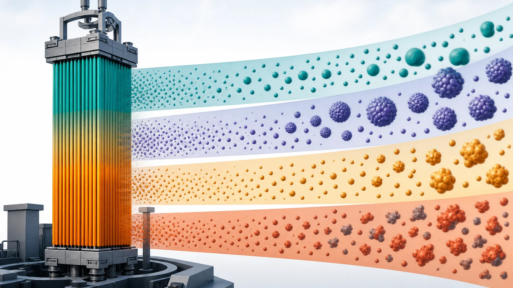
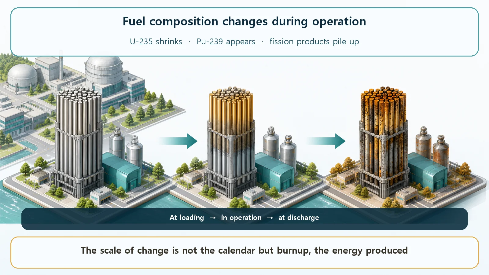
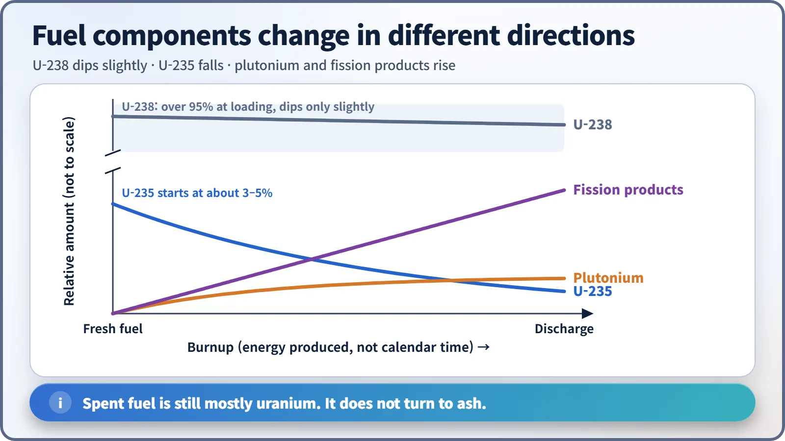

Long-Term Core Behavior & Fuel Cycle · 152
Fuel Ages Like an Old Neighborhood — How Nuclear Fuel Composition Changes During Operation
The main fissile material dwindles, a new one grows out of uranium-238, and neutron-absorbing by-products pile up, all measured by burnup rather than time.

Fuel that comes out of a reactor is not the fuel that went in. During operation uranium-235 is consumed, uranium-238 is partly turned into plutonium-239 that fissions in turn, and neutron-absorbing fission products pile up. How far this has gone is measured by burnup, the energy produced, not by calendar time.
Picture the moment fresh fuel goes into a reactor: rows of gleaming ceramic pellets, brand-new in every sense. Yet after months and years inside the reactor, what comes out may look much the same but has a thoroughly different makeup. Let's follow how fuel composition shifts during operation.
Think of a neighborhood that has been around a long time
Imagine a neighborhood you've known for decades. When you first moved in, there was one big landmark store that everyone went to, the business that kept the whole area going. Around it lay plenty of empty lots where nothing had been built yet.
Over the years, the landmark store sells off its stock and gradually shrinks. But all the bustle draws new shops onto the empty lots, and as the original store fades, the newcomers fill the gap. Meanwhile clutter builds up in the alleys, and eventually the most run-down blocks are redeveloped.
Nuclear fuel inside a reactor goes through almost exactly this story: the leading material dwindles, a new leader grows out of material that sat there like an empty lot, and by-products pile up like clutter. Let's take them one at a time.

The star player slowly tires: uranium-235 goes down
The star of fresh fuel is uranium-235, a material that fissions readily: struck by a neutron, it splits and releases energy. But there isn't much of it to begin with. In typical power reactor fuel it is only about 3 to 5% of the uranium (the remaining 95% or more is uranium-238, which we'll meet in a moment). In natural uranium it's a mere 0.7%, so its share is deliberately raised a little (enriched) before use.
While the reactor runs, uranium-235 is steadily consumed, because each one that splits to release energy is gone. The longer the reactor operates, the fewer of these star players remain, just as the landmark store's stock shrinks with every customer. Left alone, the fuel would gradually lose its ability to keep the chain reaction going. But here nuclear fuel has a twist of its own.
A new player is born on the empty lot: plutonium-239 appears
Uranium-238, which makes up most of the fuel, doesn't fission easily, so it's tempting to think of it as an empty lot that just takes up space. Yet it does something remarkable. When it catches one of the neutrons flying around the core, it goes through a couple of transformations and becomes a new substance, plutonium-239. And plutonium-239, like uranium-235, fissions readily, so as soon as it forms, it starts releasing energy right where it is.
In neighborhood terms, the bustle (the neutrons pouring out of fission) brings a new shop (plutonium-239) onto the empty lot, which opens for business on its own. The newly made plutonium fills much of the gap left as uranium-235 fades. In fact, toward the end of the fuel's life, about one-third of the energy coming out of the reactor is supplied by this newly made plutonium, a material that wasn't there at all at the start.
So plutonium is not something that only shows up in accidents or contamination: it forms in every normally operating reactor and contributes a solid share of the power.
Clutter piling up in the alleys: fission products
Not every change is helpful. Each fission splits a nucleus in two, leaving two new nuclei behind. These are called fission products, and many of them happen to be very good at soaking up neutrons. A chain reaction continues only when neutrons go on to cause the next fissions, so by-products that intercept neutrons along the way get in the reaction's way. That's why they are called "poisons." It doesn't mean they are toxins; it means that, from the chain reaction's point of view, they are troublemakers.
They accumulate over time, like clutter in the alleys. Some, such as xenon-135 and samarium-149, absorb neutrons so enormously well that even tiny amounts have a big effect. When these poisons build up and how they disappear is a story in itself, so for today just keep the big picture: by-products pile up and gradually drag on the chain reaction.

So what measures how far the fuel has changed?
A common misconception: it's easy to think of the fuel's change in calendar time, but the real yardstick is the total energy the fuel has produced. This is called burnup, a gauge of how much work the fuel has done so far. Run the reactor gently at low power and the fuel changes less over the same time; run it hard and the fuel changes a lot even in a short time. So counting by work done, rather than by the timetable, makes sense. In short:
How much the fuel has changed ≈ energy produced so far (burnup), not time elapsed
Rebuilding the oldest blocks: refueling
As the leader dwindles, the newcomer appears and the clutter piles up, there comes a point when the fuel can't perform as it did at first. Then the reactor is shut down briefly to replace fuel. Interestingly, the whole core isn't replaced at once. Usually only about one-third is swapped for fresh fuel, and the rest is rearranged and used again, much like redeveloping only the oldest blocks of a neighborhood. This happens roughly once every one to two years.
There's a reason for replacing only part of the core, and repeating these partial reloads brings the core close to a stable pattern. That deserves its own story.
Why does this matter?
This is key to why plants are designed and run the way they are. As the composition changes, so do the capacity to sustain the chain reaction (reactivity), the distribution of heat in the core, the heat left after shutdown (decay heat), and the radioactivity. So operators always keep in mind where the fuel is in its life. For example, when the fuel is fresh, an absorber (boric acid) dissolved in the coolant holds down the excess reactivity so it isn't too strong; as the fuel is consumed and loses strength, that absorber is gradually diluted to keep the balance.
One more misconception: "When nuclear fuel is used up, only ash is left." Fission isn't chemical combustion like wood burning to ash. Most of the used fuel is still uranium, mixed with plutonium and fission products, and decay heat and radioactivity remain for some time. That's why spent fuel isn't simply thrown away but must be carefully cooled and stored for a while.
Today's takeaways
- Fresh and well-used fuel look alike but differ completely inside.
- Uranium-235 is consumed, while uranium-238 turns into plutonium-239, which takes over a good share of the power.
- Fission products (poisons) accumulate and gradually hinder the chain reaction.
- The degree of change is measured by energy produced (burnup), not elapsed time.
- Only part of the core is replaced at each refueling, and because composition drives reactivity, power distribution, decay heat and radioactivity, plant operation always assumes where the fuel is in its life.
Having looked at how heat is made and moved, we now follow how a core ages and renews itself over months and years: the long life of fuel and the fuel cycle.